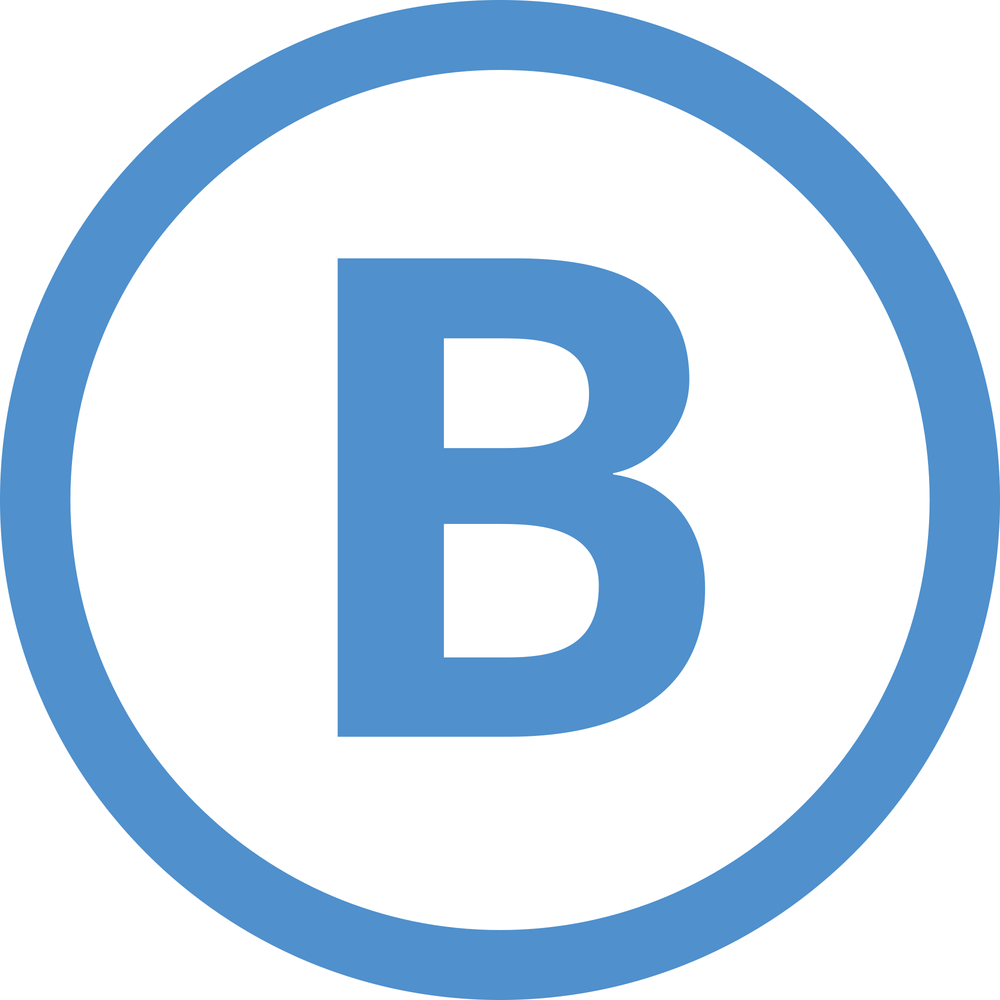
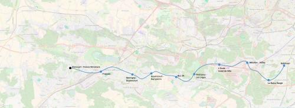

RER B Saint-Quentin-en-Yvelines
Robinson - Élancourt - France Miniature
Une extension de la ligne B du RER.
Le projet d'extension du RER B de Robinson à Élancourt est un projet d'amélioration de la desserte de la banlieue sud-ouest de Paris. Le tracé passerait par Châtenay-Malabry, Vélizy, Buc et Guyancourt. Il permettrait de relier Vélizy à Saint-Quentin-en-Yvelines de manière simple et rapide et offrirait un accès au RER à un secteur actuellement très mal desservi.
En complément, comme le tracé est plus ou moins parallèle à la voie rapide A86/N12 il permettra un bon report du trafic de la route vers les transports en commun.
Voir les autres projets associés à cette ligne
Carte

Cliquer pour agrandir
Stations
Si ce projet vous intéresse n'hésitez pas à le (re-)partagez sur les réseaux sociaux ou par courriel ou à en parler autour de vous.
Si vous souhaitez travailler à la concrétisation de ce projet, passez à l'action et contactez nous.
Commenter